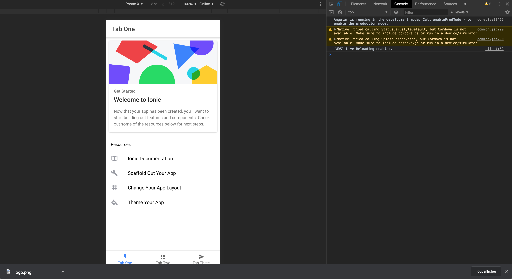

pour lancer un projet Ionic c'est très simple. Allez dans le dossier qui vous intéresse et lancez la commande suivante.
ionic start myApp blank
Si la CLI vous demande de choisir entre Angular et React, choisissez Angular. Si elle vous demande de choisir entre Cordova et Capacitor, choisissez Capacitor.
Le processus va tourner quelques instants. Créer les fichiers et installer les dépendances avec npm.
Vous avez maintenant un projet ionic vide que vous pouvez lancer avec la commande suivante.
Vous devriez maintenant pouvoir lancer les commandes suivantes
cd myApp/
ionic serve
Cette dernière commande va ouvrir votre projet dans votre navigateur.

Ionic en lui même est très simple, souvenez vous en ! Ce n'est ni plus ni moins qu'un bootstrap moderne. La plupart du métier qui est exécuté au niveau natif de votre application (Création des platforme, build natif etc...) est fait par cordova.
Partant de la vous savez que Ionic vous mettra à disposition beaucoup de composants graphique avec une apparence d'application native, destinés à vous faciliter la tache.
Vous pouvez en retrouver la liste sur la documentation avec pour chacun, une description détaillé de son mode d'utilisation, de ses paramètre etc...
Ionic met à notre disposition une CLI puissante nous permettant de générer de nouveau écran facilement (De la même façon que angular avec ng).
Vous pouvez en retrouver toute la documentation ici: https://ionicframework.com/docs/cli
La commande qui nous intéresse ici est la commande generate
# Exemple
ionic generate page pages/photo-gallery
ionic generate service services/photo/photo
Pour qu'il nous soit possible de build notre application, nous devons dire à cordova que notre application doit ajouter cette platform.
Nous utilisons une commande de cordova réimplémenté dans la CLI de ionic.
ionic cordova platform add android
Pour ajouter un plugin à notre application, on passe une fois de plus par la CLI.
Tous les plugins disponibles sont indiquez dans la documentation et décrivent les instructions d'installation ainsi que les manières de les utiliser.
Pour information le plugin que nous utilisont en cours est ici: Plugin Camera